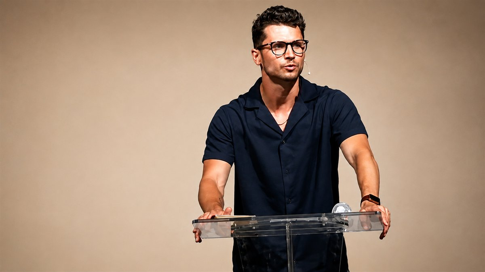
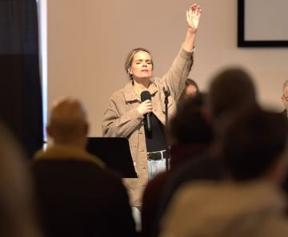
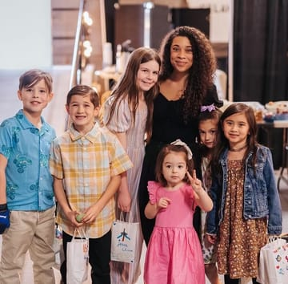

Our Team
The people you’ll meet here.
Selah is led by people who’d rather know your name than fill a seat.
Selah is led by people who’d rather know your name than fill a seat.
The people leading and serving alongside you at Selah.

Before planting Selah Church, Luke served as a campus pastor at the University of Mary Washington, where he spent several years discipling college students and helping them develop a lifelong faith in Christ. He holds a Master of Divinity with a concentration in Spiritual Formation from Regent University.
Luke is passionate about faithfully teaching God’s Word, creating space for the Holy Spirit to move, and equipping believers to become lifelong disciples of Jesus. His greatest desire is to see the local church become a place where people encounter the presence of God, experience authentic community, and are empowered to live out the mission of Jesus in their everyday lives.
When he’s not preaching or investing in the life of the church, Luke enjoys spending time with Amanda and their two children, Maverick and Haven, and cheering on the Denver Broncos.
Amanda spent several years serving overseas with Youth With A Mission (YWAM), where she helped lead, disciple, and equip young missionaries to live boldly for Christ. She has a deep passion for seeing people experience the transforming love of Jesus and discover their God-given identity and purpose.
At Selah Church, Amanda serves as the Women’s Pastor, providing leadership, discipleship, and pastoral care to women of all ages. She is passionate about helping women grow in their relationship with Jesus, build authentic community, and walk confidently in the calling God has placed on their lives.
When she’s not serving at church, Amanda loves spending time with Luke, Maverick, and Haven, enjoying good coffee, hosting people in their home, and making memories with family and friends.

Jordyn has been leading worship for over a decade and is passionate about creating spaces where people can encounter the presence of God. She was a pivotal leader in Cabin Worship, a movement dedicated to uniting the Body of Christ throughout Fredericksburg through worship and prayer.
Jordyn has been married to her husband, Matt, for over 15 years, and together they are raising their three children: Emma, Finn, and Sparrow.
As Worship Director at Selah Church, Jordyn faithfully leads the congregation into God’s presence while investing in and developing the next generation of worship leaders. Her heart is to cultivate a culture of authentic worship that exalts Jesus, embraces the leading of the Holy Spirit, and creates space for people to encounter God in a life-changing way.

Kylie has a deep love for children and a heart for helping the next generation know and follow Jesus. As the daughter of missionaries, she grew up serving alongside her family in Loreto, Peru, where she developed a lifelong passion for the local church and sharing the gospel.
In 2018, Kylie graduated from Liberty University with a bachelor’s degree and has since spent several years serving children in both educational and ministry settings. In 2024, she married her husband, John, and together they are raising their daughter, Jade.
As Selah Kids Director, Kylie is passionate about partnering with parents to disciple the next generation by creating a safe, engaging, and Christ-centered environment where every child feels known, loved, and excited to learn about Jesus.